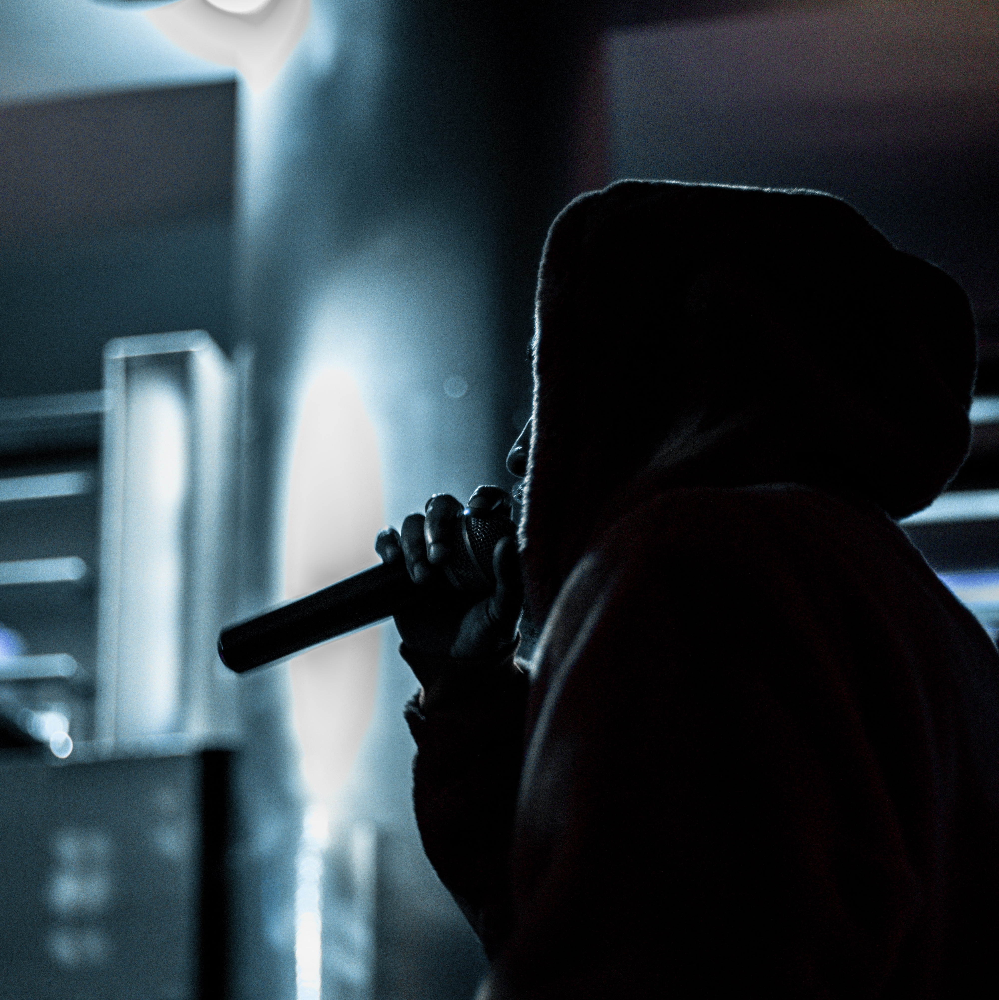

Micro
Il s'agit d'une technologie permettant d'alimenter le microphone avec un courant électrique via le câble XLR par lequel passe également le signal enregistré.
platine
Une platine CD est un appareil constitué d'un lecteur de CD et destiné à la lecture de disques compacts audio.

rap
Est une véritable musique populaire de rue qui développait ses propres thèmes : d'une part sous l'influence de la Zulu Nation d'Afrika Bambaataa et d'autre part en tant que témoignage d'une vie ...